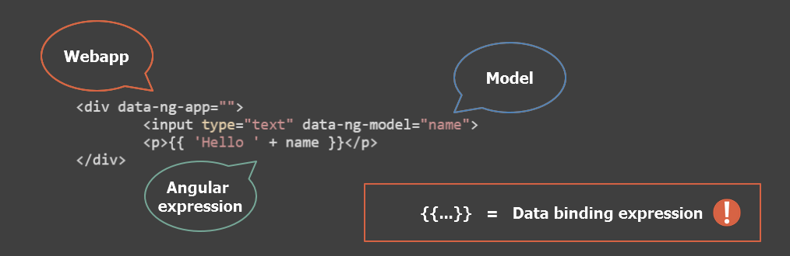
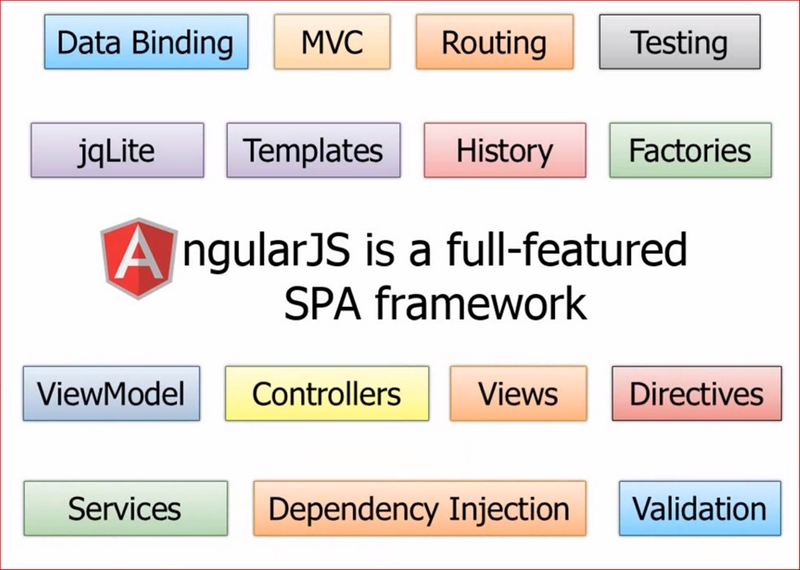
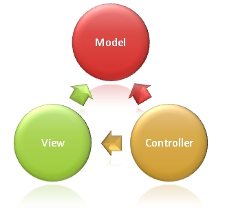
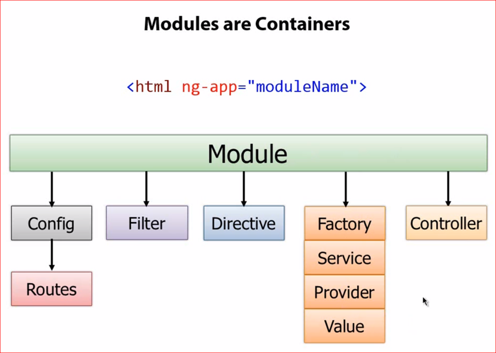

AngularJs
Warming up
Created by Tamas Hoffman
Agenda
- Versions
- Key features
- Behind the scenes
- Angular application building blocks
- Directives
- Filters
- Controllers
- Services / Factories
- Modules
- Router
Versions
- 1.x
- 1.3 - first stable and performant version (IE8 support dropped!)
- 1.4 - introduced a more flexible router concept
- 1.5 - a transition between Angular1 and Angular2
- 2.0
- currently in BETA
- target ES6 and evergreen browsers
- complete rewrite of the framework (written in TypeScript)
Key features
"Angular is what HTML would have been, had it been designed for applications."
- client side MVC framework
- SPA support
- Declarative UI + dynamic templating
- DI + 2 way data-binding
- Testability in mind (unit/e2e)
Single page applications
- native-app-like experience
- UI rendering is on client side
- any part of the UI can be redrawn without server roundtrip (AJAX)
- model and view layer separation
Sample app
{{ 'Hello ' + name }}
{{ 'Hello ' + name }}
Declarative UI
Behind the scenes

Application building blocks
Standard Directives
- no manual DOM manipulation!
- custom directives
Filters
- {{person | uppercase}}
-
{{ person }}
- directives + filters are powerful
- everything is on the view! ;(
Separation of concerns
Controllers
angular.module('ListManager', [])
.controller('ListManagerController', ListManagerController);
function ListManagerController($scope) {
$scope.name = 'Hope';
}
{{name}}
Controllers scope
- plain js object
- $scope = ViewModel
- use with data-ng-controller directive
Services / Factories
//Define services/factories
angular.module('demoApp',[])
.service('FlagManagerService',FlagManagerService)
.factory('FlagManagerFactory',FlagManagerFactory);
- encapsulate business logic independent from view
- can be injected into controllers
- singletons
// FlagManager factory
function FlagManagerFactory(){
var flag;
return {
get : function get(){
return flag;
},
set : function set(newValue){
flag = newValue;
}
};
}
// Angular instantialization
var inst = FlagManagerFactory(); /* { get: function, set: function } */
// FlagManager service
function FlagManagerService(){
var flag = null;
this.get = function get(){
return flag;
};
this.set = function set(newValue){
flag = newValue;
};
}
// Angular instantialization
var inst = new FlagManagerService(); /* { get: function, set: function } */
Modules
Module definition
// Module declaration
angular.module('Main', []);
// Module with dependencies
angular.module('Main', ['FlagHandlerModule','HttpCallerModule']);
// Module reference
angular.module('Main');
Router
- help splitting a webapplication into standalone views
- router is not part of core angular ( include angular-route.js)
- angular uses #fragment to define routes
- use with data-ng-view directive
URL: scheme:[//[user:password@]host[:port]][/]path[?query][#fragment]
Go to edit
Go to view
Defining routes to a module
angular.module('demoApp', [])
.config(function ($routeProvider){
$routeProvider
.when('/display',
{
controller: 'Controller1',
templateUrl: 'View1.html'
})
.when('/edit',
{
controller: 'Controller1',
templateUrl: 'View2.html'
})
.otherwise({ redirectTo: '/display' });
});
Summary
- today we learnt about...
- Templates plain HTML with additional markup
- Directives(+Filters) teach new tricks to HTML
- Controllers the business logic behind views
- Modules container for app building blocks
- Router helps defining standalone views
Webapp in Angular